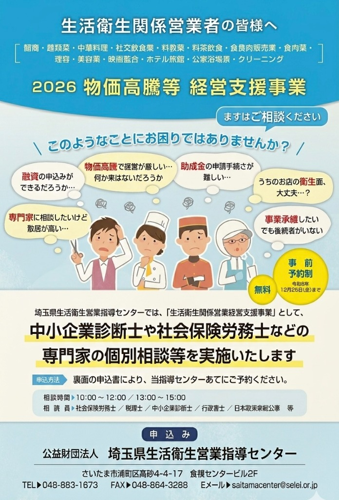
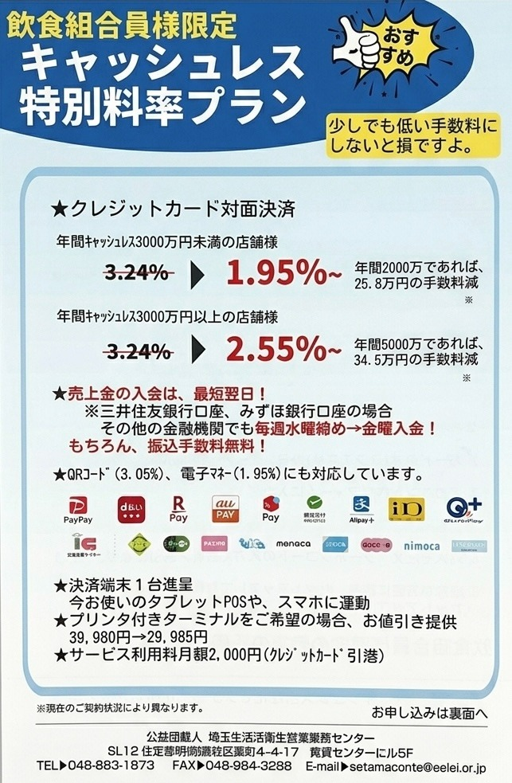
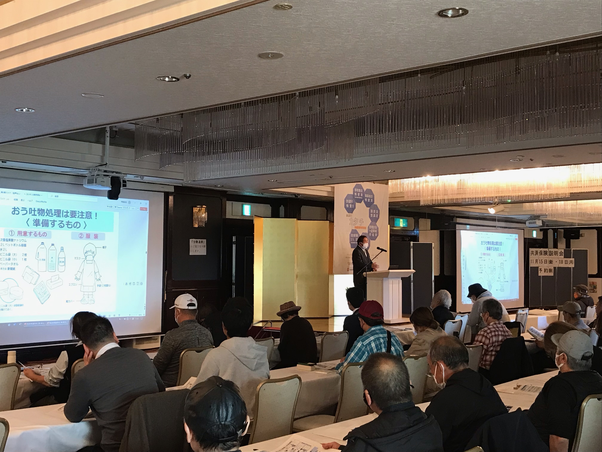
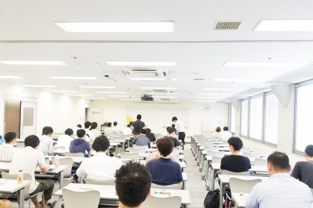
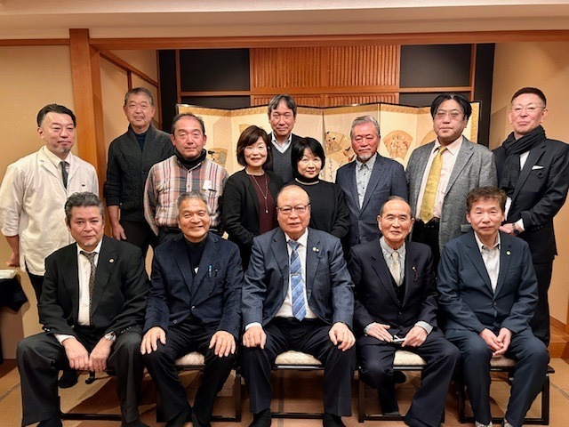

制度紹介
市長からの挨拶
東松山市飲食店組合のホームページ開設、誠におめでとうございます。
飲食業は、人々の日々の暮らしを豊かにし、地域の文化と賑わいを支える大切な存在です。
貴組合は「安心・安全な食の提供」のため、衛生管理の徹底や調理技術の向上、健全な営業環境づくりに長年取り組んでこられました。その姿勢は、市民からの信頼の礎となっております。
この度のホームページ開設を機に、加盟店の魅力が広く発信され、地域の食文化がさらに発展することを心よりご期待申し上げます。
東松山市長 森田光一
日本政策金融公庫への資金証明書発行について
当組合は、埼玉県料飲業生活衛生同業組合に所属しており、組合員向けの特別金利が適用される各種融資制度をご利用いただけます。
1. 振興事業貸付（特別金利優遇）
（株）日本政策金融公庫の振興事業貸付用の資金証明をご希望される方は、原則として融資相談日に、経営特別相談員による融資経営相談を受けていただきます。
融資相談を受けられ、書類が整った方に、当組合理事長による資金証明を発行いたします。その資金証明を持って所轄の金融公庫に各自ご提出ください。
※県組合に登録されている営業許可書の名義人が借入申込人となります。
【融資経営相談と資金証明書の発行について】
毎週水曜日（午後1時～3時）融資経営相談日：県組合事務所にて開催
（毎月第2・第4水曜日は、日本政策金融公庫熊谷支店でも融資経営相談有り）
【資金証明書発行までの3ステップ】
相談（毎週水曜）を受ける
経営特別相談員による相談を受けます。
必要書類を提出する
書類を揃えて県組合へ提出します。
資金証明書の発行
理事長の証明書を受け取り公庫へ提出します。
【必要書類リスト】
借入申込人の条件により次の様な書類が必要です。
- 借入申込書
- 組合長推薦書（資金証明書発行依頼書）
- 営業許可書（コピー）
- 印鑑
- 平面図・見積書・契約書（コピー）等
- 青色申告書・確定申告書・納税証明書（コピー）等
- 開業計画書・在職証明書等
- 商業登記簿謄本（法人の場合）
※理事長の資金証明をご希望の方は、前もって県組合事務局にお問い合わせください。
2. 生活衛生改善貸付（無担保・無保証人）
振興事業貸付とは異なり、特別な要件・書類等が必要で、融資推薦書が出る迄各種審査等があります。
無担保・無保証人で融資を受けられるため、非常に優遇された制度ですが、慎重な手続きが必要となります。必ず事前に県料飲組合事務局までお問い合わせください。
⚠️ 重要な注意事項
県料飲組合を脱退すると、金利が一般貸付に戻りますのでご注意ください。
組合長推薦書を金融公庫へ提出しても金利は優遇されません。必ず理事長による資金証明書を事務局にてお受け取りになります様ご指導ください。
支援事業・特別プランのご案内
組合員限定でご利用いただける、経営支援およびキャッシュレス決済の優遇プランです。
経営支援事業・相談窓口
物価高騰等に伴う経営支援・専門家による個別相談会（事前予約制・無料）

飲食組合員様限定 キャッシュレス特別料率プラン
クレジットカード対面決済の手数料を大幅に引き下げ（最安1.95%〜）

加入メリット
組合に加入をすると、あなたのお店にプラスになる便利な組合特典が利用できます。
福利厚生見舞金制度
福利厚生規定により御見舞金が支給されます。
各種共済保険の加入
団体割引掛け金によるお得な各種共済保険（食中毒、交通傷害など）をご利用いただけます。
共済保険の詳細 ↓
特別優遇融資制度
日本政策金融公庫の振興事業貸付（資金証明書発行）や、生活衛生改善貸付（無担保無保証）がご利用いただけます。
融資詳細を確認する ↓
クレジット決済団体割引
クレジットカード対面決済の手数料を最安1.95%〜優遇。お店のコスト削減をサポートします。
キャッシュレス詳細を見る ↓
情報提供・ネットワーキング
総会や研修会を通じて同業者との情報交換ができ、地域の食文化の活性化へ繋がります。
カラオケ利用料の団体割引
JASRACカラオケ使用料に組合員限定の団体割引が適用されます。
カラオケ申請の詳細 ↓
各種共済保険の詳細
全飲連等で団体加入していますので、団体割引掛け金となり、大変お得です。
全飲連新総合賠償共済制度
（食中毒共済保険が高度な補償内容となりました）
- 一年間補償の掛け捨て保険です。（補償期間8月1日より1年間）
- 毎年6月～7月に募集します。（中途加入も受け付けます）
- お店の規模により色々な補償タイプがあります。
- 各組合でまとめて、県料飲組合事務局までお申込みください。
全飲連交通傷害・普通傷害共済制度
- 一年間補償の掛け捨て保険です。（補償期間毎年10月1日より1年間）
- 毎年8月～9月に募集します。（中途加入はありませんのでご注意ください）
- 各組合でまとめて、県料飲組合事務局までお申込みください。
全連団体所得補償保険
（代理店：オフィスマリン）
- 病気や怪我・事故による休業期間の所得補償を受けられる共済保険です。
- 保険会社からダイレクトメールで募集があると思いますが、もし無い場合は組合長を通して、県料飲組合事務局までお問い合わせください。
全飲連団体入院補償保険
（代理店：オフィスマリン）
- 病気や怪我による入院費用を日帰り入院から補償する保険です。
- 保険会社からダイレクトメールで募集があります。
スーパーがん保険
（代理店：オフィスマリン）
- がんになったとき、診断時一時金・入院給付金・退院一時金等が給付されます。
- 保険会社からダイレクトメールで募集があります。
アメリカンファミリー生命保険
（代理店：ユニバーサルファミリー埼玉支社）
- がんになったとき、診断時一時金・入院給付金・手術給付金・通院給付金等が給付されます。
- 保険会社が組合に説明・募集に伺います。
※ 保険会社から募集がない場合等は、組合長を通して県料飲事務局までお問い合わせください。
カラオケ著作権利用申請について
⚠️ 法律による定めについて
カラオケ等により音楽をご使用のお店は、日本音楽著作権協会（JASRAC）との間に音楽の使用許諾契約を締結し使用料を支払うことが法律によって定められており手続きをせず、使用料を支払わなかった場合は罰せられることがあります。
💡 組合員だけの団体割引特典
当県料飲組合と日本音楽著作権協会との間で業務協定を締結しており、カラオケ使用申込み手続の際、県料飲組合員は団体割引扱いとなります。
【申請プロセスと重要なお知らせ】
-
1
カラオケ利用申込書にご記入の上、所属の組合長を通じて県料飲組合事務局までお送りください。
-
2
直接、JASRACへ提出されても割引されません。必ず県組合事務局をお通しください。
-
3
割引は、JASRAC申し込みの翌月から適用されますので速やかに県組合までご提出ください。
※カラオケ利用申込書は、県組合事務局にご請求ください。
組合長からの挨拶
東松山市飲食店組合の皆様、日々の営業お疲れ様です。
私たち東松山市飲食店組合は埼玉県料飲業生活衛生同業組合に所属することにより皆様の店舗経営を多角的にサポートするためのものです。
近年の急激な社会変化や物価高騰など飲食店を取り巻く環境は厳しいものがありますが組合一丸となって困難を乗り越えてまいりたいと考えております。
有利な融資制度や各種割引、そして何より横のつながりである「情報交換の場」として当組合を存分にご活用下さい。
皆様とともに東松山市から豊かで活力ある食文化を発信していきましょう。
東松山市飲食店組合 組合長 小林浩章
活動報告・ギャラリー
組合のイベントや加盟飲食店の活動の様子をご紹介します。



組合で輝く店舗紹介
ご加入に関するお問い合わせ
加入についてはもちろん、ご不明な点はお気軽にご相談ください。
090 9109 3096
yebisuya4060@icloud.com
受付時間: 平日 9:00〜17:00